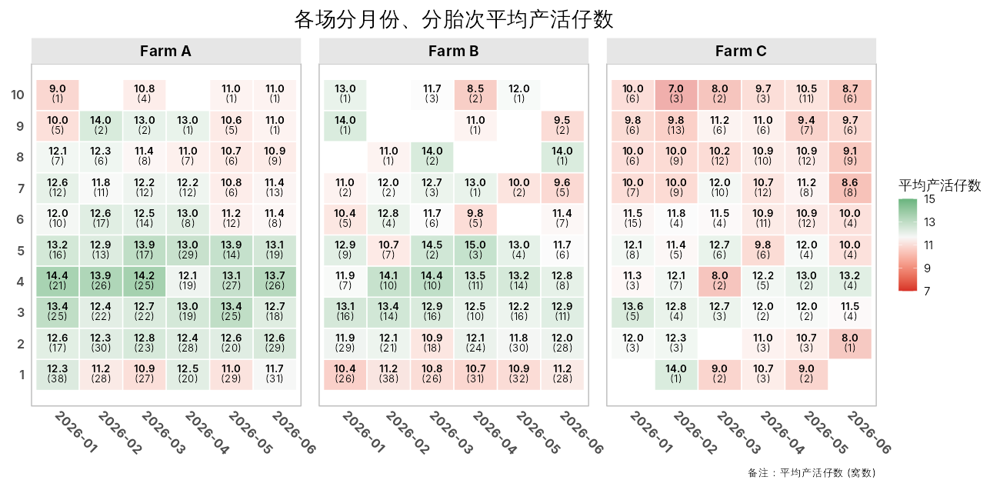

猪场生产数据的性能热图工具：按胎次 × 月份（或场区、品系……）汇总生产指标， 画成带数值和样本数标注的热图。
- 自动聚合：均值、中位数、标准差……也可以传入自定义函数
- 分段色阶：胎次、背膘厚、首配日龄等有经验最优区间的性状，用颜色直接标出”好/坏”区间
- 样本量提示：格子显示窝数，还可以按样本量调节透明度，一眼看出哪些结果不可靠
-
中文友好：中文列名、中文标签开箱即用，
enable_cn_font()解决导出图片的中文显示
安装
# install.packages("remotes")
remotes::install_github("tony2015116/pigheatmap")
# 导出含中文的图片时需要
install.packages("showtext")示例
library(pigheatmap)
plot_performance_heatmap(
sow_demo,
x_var = "month", y_var = "parity", fill_var = "born_alive",
facet_vars = "farm",
y_axis_type = "parity",
alpha_by_count = TRUE,
fill_lab = "平均产活仔数",
title = "各场分月份、分胎次平均产活仔数"
)
各场分月份、分胎次的平均产活仔数
更多用法见网站上的文章：
开发
本包使用 fusen 开发，所有代码、文档、测试和文章都写在 dev/flat_*.Rmd 中，R/、tests/testthat/test-*.R、vignettes/ 都是生成的，不要直接修改。
# 修改 dev/flat_*.Rmd 之后
source("dev/inflate_all.R") # 重新生成整个包
devtools::check()
pkgdown::build_site() # 本地预览网站完整的开发流程见 dev/0-dev_history.Rmd。推送到 GitHub 后，GitHub Actions 会自动运行 R CMD check，并构建网站发布到 GitHub Pages。